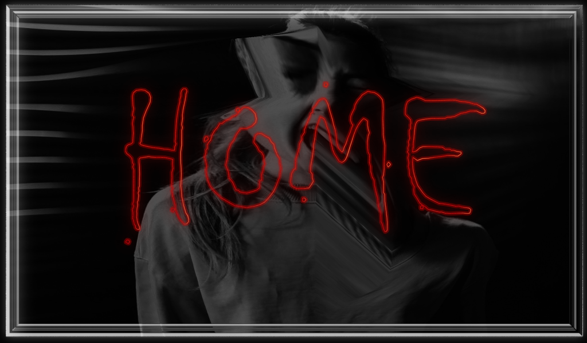

|  | COSTUMES | CANDY | SCARY MOVIES | REFERENCES |
| People love to dress up in all sorts of costumes for Halloween. Some of the common, traditional costumes include vampires, ghosts, witches, and various kinds of monsters. However, there are also a lot that are not so scary or evil-spirited, such as princesses, fairies, nurses, superheroes, and beloved cartoon characters. Some dress up as elderly folks, lumberjacks, famous actors or musicians, or police officers. | ||||
| Young babies and pets are often dressed up in simple costumes like pumpkins, bumblebees, or cats. | ||||
| Some people prefer to get away from the traditional costumes and use their creativity to come up with very unique outfits. Here are some pretty cool/interesting costumes: | ||||